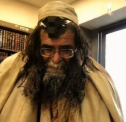

סיפור ראשון: דרכו בקודש ותחילת המסע
עמוס זצ'ל היה ידוע בצדקותו העצומה בעיר נתניה, באהבת התורה הבלתי מתפשרת ובמאור הפנים שבו קיבל כל אדם שהגיע לפתחו לקבלת עצה וברכה.

אתר הנצחה וזיכרון לפועלו ומורשתו של עמוס זצ"ל, שנרצח על קדושת השם בישיבתו
הצטרפו להמוני בית ישראל והדליקו נר וירטואלי לעילוי נשמתו הטהורה של הצדיק.
עמוס זצ'ל היה ידוע בצדקותו העצומה בעיר נתניה, באהבת התורה הבלתי מתפשרת ובמאור הפנים שבו קיבל כל אדם שהגיע לפתחו לקבלת עצה וברכה.

story@gmail.com